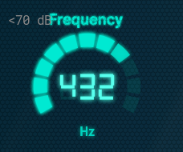
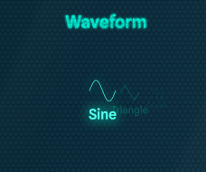
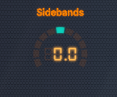
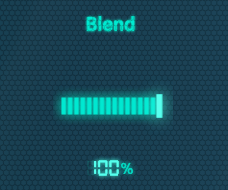
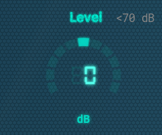
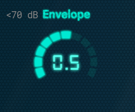

Modulation & Pitch
Cognate Ringmod Manual
Version v1.10 · 06/04/2026
Modulation & Pitch
Version v1.10 · 06/04/2026
| Category | Modulation & Pitch |
| Channels | Mono in / mono out |
| Version | 1.10 (06/04/2026) |
Cognate Ringmod is ring modulation at its most playful — and most controlled. At its core it's a classic ringmod: a carrier oscillator multiplied against your bass, with drive to push it into rougher territory. The Sidebands control opens it up further, morphing continuously between lower-sideband frequency shifting, full ring modulation, and upper sideband — everything from subtle pitch displacement to full metallic clang. An expressive envelope section ties the carrier to your playing dynamics; Tracking locks the carrier to your bass's pitch for harmonised intervals from an octave down to three octaves up. Stars falling, doom bells, sci-fi aliens, EDM growls — and a surprisingly fat octaver — all in one block.

Page 1 of 2

Page 2 of 2

Turns off the ring modulator and passes your bass straight through. The plugin stays in your preset, so you can switch the effect in and out without reloading anything.

The carrier oscillator's frequency. The whole character of the effect depends on this:
When Tracking is on, this control is overridden in favour of Interval.

Shape of the carrier oscillator. Each waveform produces a different harmonic interaction with your bass.

Saturation in front of the modulator. At 0 the multiplication is clean — every artefact is purely the carrier × bass interaction. As you push it, the bass is driven harder before being modulated, generating extra harmonics that interact with the carrier and produce a denser, rougher, more aggressive output. Goes from polite ringmod to full digi-noise across the range.

Continuously morphs between three modes of operation, all in one knob.
Anywhere in between is a smooth blend. Try mid-positive values for a slightly displaced shimmer over the dry-ish bass.

Mixes the modulated signal against the dry bass. At 100% you only hear the effect; pull it back to keep the dry bass underneath as a foundation for the modulated layer to sit on. For extreme settings (Square waveform, high Drive) blending in some dry signal is often what makes the result musically usable.

Output trim. Heavy ring modulation can change perceived loudness in unpredictable ways — use Level to match the bypassed and engaged volumes so kicking the effect on isn't a level surprise.

Shapes the speed of the envelope follower that responds to your playing. Low values give a slow, smooth envelope — the effect breathes with the contour of each note; high values are snappy and zappy, locking onto each pick attack. Pair with Env Amount to set how much the envelope actually moves the carrier.

How much — and in which direction — your playing dynamics push the carrier frequency. Bipolar:
Use this to make Ringmod react to your touch instead of just sitting there: hit harder for more, ease off for clean.

A single-knob LFO that adds automatic movement to the carrier frequency. Bipolar:
Combines additively with the envelope, so you can have both touch-responsive and automatic movement at once.
When on, Ringmod listens to your bass's pitch and locks the carrier oscillator to follow it. Frequency is overridden; Interval sets the harmonic relationship between the carrier and your fundamental. This is what turns the plugin into a harmoniser or octaver — every note generates its own carrier at the chosen interval, so the modulation result is always musically related to what you're playing.

The interval between your bass note and the tracked carrier, in semitones. Only active when Tracking is on. Ranges from an octave below (-12) to three octaves above (+36).
Try non-octave intervals (like +5 or +14) for more dissonant, sci-fi harmonisations.